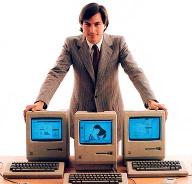

V0.5 Product
This is as a ‘production release’. It should be at least ‘near production quality’.
Please follow submission instructions closely. Any non-compliance will be penalized.
e.g. wrong file name, team member photos not suitable, product manual page header doesn't have the team ID, etc.
Add these two new files to the repo
(these will be used by our testers when testing your final submission):
{project root}\src\test\data\ManualTesting\SampleData.xml :
Sample data that can be loaded to your app. Should contain 50+ items covering past and present.{project root}\src\test\data\ManualTesting\TestScript.md :
A document explaining the steps to perform manual testing (i.e. manual scripted testing),
starting with how to load the sample data.
Should cover all functionality of the product.
Should specify the command to type and the expected result (screenshots not required).
Limit the test cases to about 20 minutes worth of testing.
Submission:
-
Source code: Push the code to GitHub and tag with the version number.
Source code (including collated .md files; please ensure the collated .md
files are up to date, you will not be allowed to updated them later) Note that the
quality of the code in these .md files accounts for 15 marks of your final score, graded individually.
-
Executable: upload to IVLE as an exe or jar or zip file (this should not contain source
files). File name:
[team][project name].jar
e.g. [T09-B1][ToDoo Pro].jar
Warning: When determining the late submission penalty, we take the latest submission even if the same exact file was
submitted earlier. Do not submit the same file multiple times if you want to avoid unnecessary late submission
penalties.
Deadline: Week 13 Monday 23.59.
Grading: Given in a section below.
V0.5 Documentation
Submission:
- Update User Guide, Developer Guide, README, and AboutUs pages on GitHub.
- Convert User Guide into a pdf file and name it as
[TEAM_ID][Project Name]UserGuide.pdf
e.g.[T09-B1][ToDoo Pro]UserGuide.pdf
- Similarly, convert the Developer guide into a pdf file, name it as
[TEAM_ID][Project Name]DevGuide.pdf
e.g. [T09-B1][ToDoo Pro]DevGuide.pdf
- Upload both pdf files to IVLE.
Deadline: Same as V0.5 product.
Grading: Given in a section below.
V0.5 Demo

-
Venue: Same as the tutorial venue.
-
Duration: Strictly no more than 12 minutes. Exceeding this limit will be penalized.
-
Schedule: Your demo timing is same as your tutorial time in week 13.
Starting times: Team B1: 00 minutes, B2: 15 minutes, B3: 30 minutes, B4: 45 minutes
At least some team members need to arrive 15 minutes ahead of the allocated time to set up your computer.
There is an automatic penalty if you are not ready to start on time..
-
Target audience: Assume you are giving a demo to a higher-level manager of your company, to
brief him/her on the current capabilities of the product.
The scenarios you demonstrate should be chosen judiciously so that you cover the full range of your product's
functionality. Give more time to stronger features (i.e. cover mundane/basic features fast).
It is recommended you showcase how the product improves the user’s workflow rather than simply
describe each feature.
No need to cover design/implementation details as the manager is not interested in those details.
-
Dress code : The level of formality is up to you, but it is recommended that the whole team dress
at the same level.
- Testing:
All team member should remain in the holding area during the tutorial slot (when you are not doing the demo)
because our testers might need to communicate with you during the testing.
Holding area for Active Learning Room: Unused area of the room (enter by the door near the staircase)
Holding area for SR5: Tables outside SR5
- Structure:
Demo the product using the same executable you submitted, on your own laptop, using the TV.
Every team member should take part in the demo. However, it's ok for one member to do all the typing.
- Optimizing the time:
Try to make the maximum use of the short demo time in the following ways,
-
Spend as much time as possible on demonstrating the actual product.
Not recommended to use slides (if you do, use them sparingly) or videos or lengthy narrations.
Avoid skits, re-enactments, dramatizations etc. This is not a sales pitch or an informercial.
While you need to show how a user use the product to get value, but you don’t need to act like an
imaginary user. For example,
[Instead of this]Jim get’s a call from boss. "Ring ring", "hello", "oh hi Jim, can we
postpone the meeting?" "Sure". Jim hang up and curses the boss under his breath. Now he starts typing
..etc.
[do this] If Jim needs to postpone the meeting, he can type …
It’s not that dramatization is bad or we don’t like it. We simply don’t have enough time for it.
Note that CS2101 demo requirements may differ. Different context → Different requirements.
-
Rehearse the steps well and ensure you can do a smooth demo.
Demos that are clearly under-prepared will be penalized.
-
If you are not deft with using the laptop’s touchpad, please bring a mouse.
-
Don’t waste time repeating things the target audience already knows.
Assume the target audience knows that the product is a task manager targeting Jim-like users.
That means no need to explain those things again.
Also assume the target audience knows who you are.
That means no need to say things like "We are students from NUS, SoC".
-
Bring sufficient amount of sample data and know how to load them to the system. You should not plan to type all
the sample data during the demo itself. On the other hand, trying to demo a product using just a couple of
sample tasks creates a bad impression too.
-
Plan the demo to be in sync with the impression you want to create. For example, if you are trying to convince
that the product is easy to use, show the easiest way to enter a task before you show the full command with all
the bells and whistles.
Grading: Given in a section below.